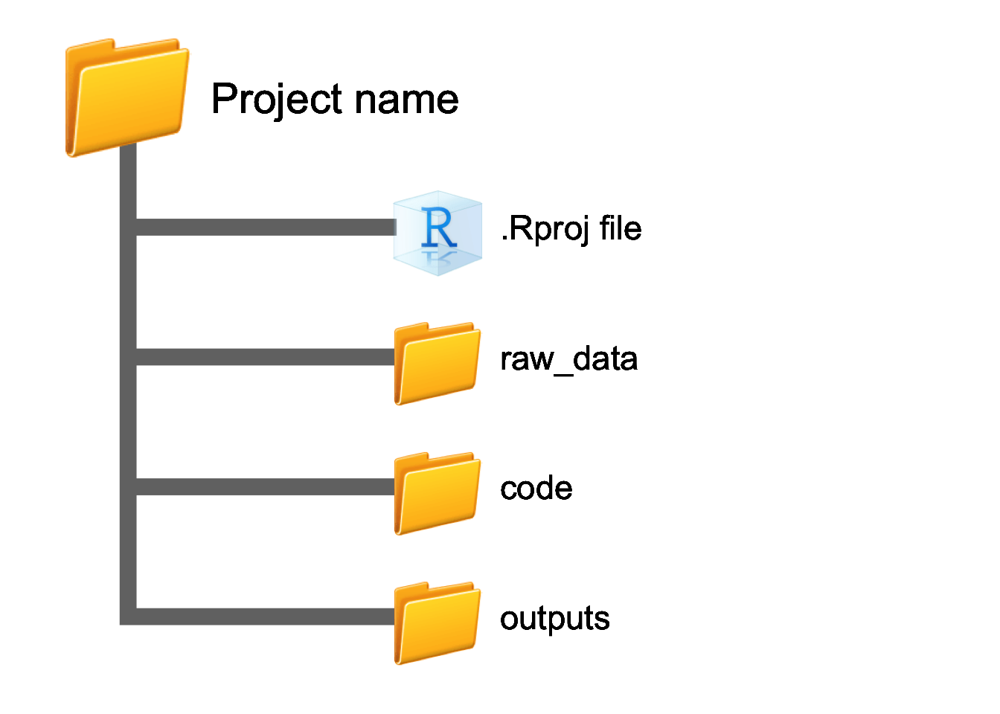
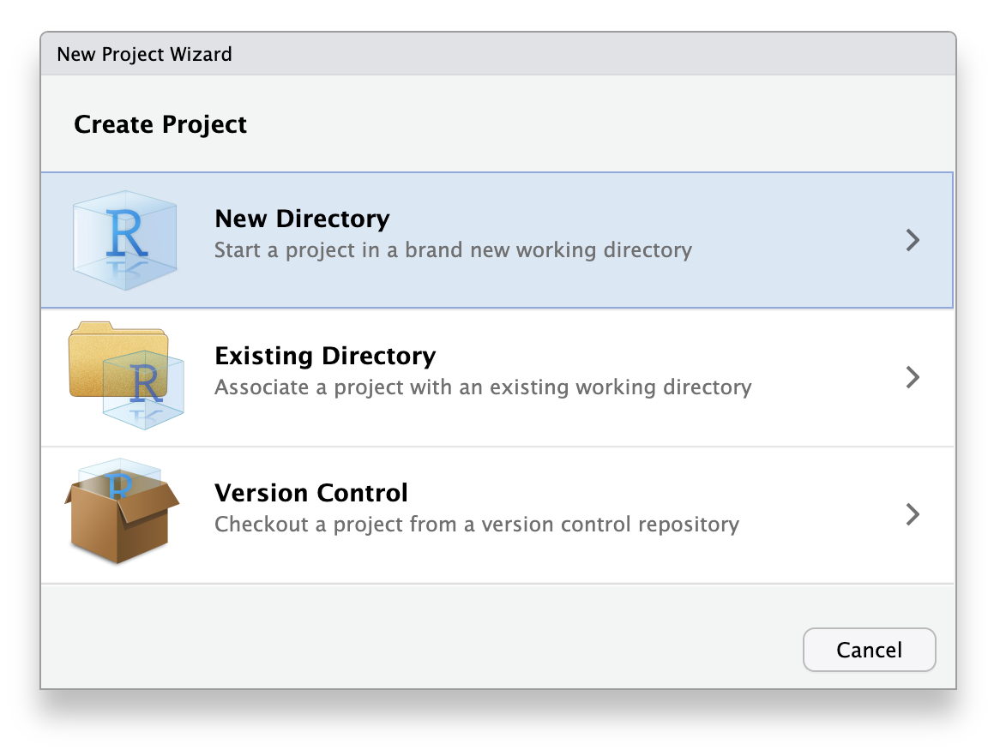
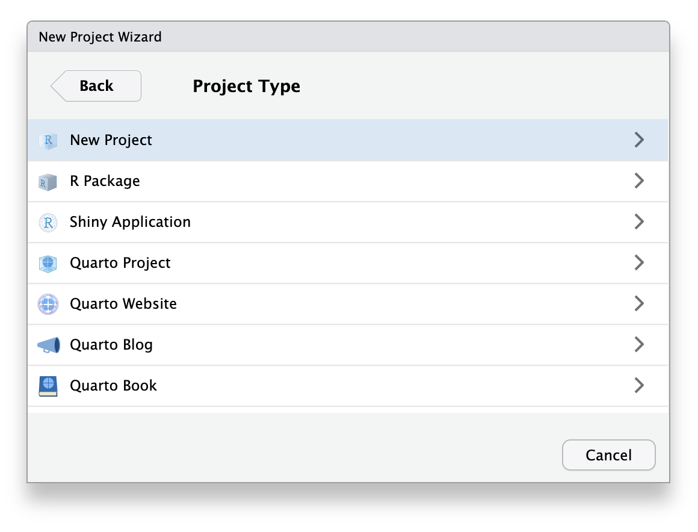
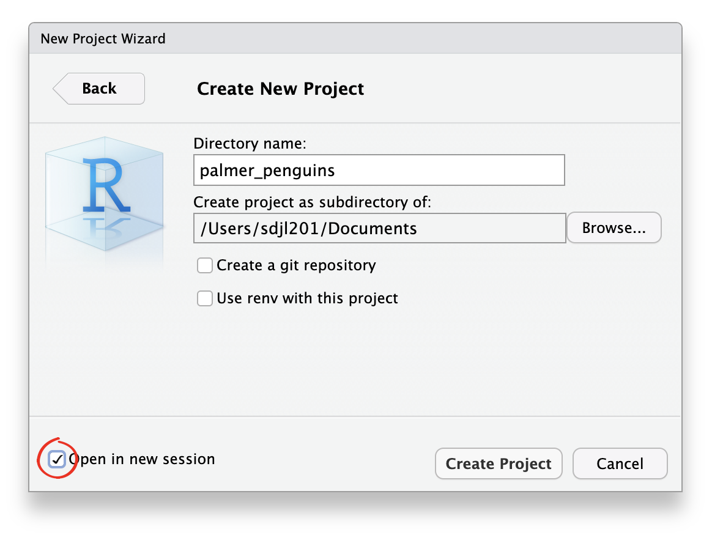

Outline
When we’re doing research, we often find ourselves working on more than one research project at time. Managing multiple folders of data and code can be confusing enough, but when we throw R into the mix, things can get messy very quickly. A large part of the confusion comes from how most folks manage research projects on their own system — which was been aptly summarised by the wonderful Jenny Bryan:
If the first line of your R script is
setwd("C:\Users\jenny\path\that\only\I\have")I will come into your office and SET YOUR COMPUTER ON FIRE 🔥.
If the first line of your R script is
rm(list = ls())I will come into your office and SET YOUR COMPUTER ON FIRE 🔥.
While I won’t come and set your computer on fire (especially because I have committed both of these coding crimes in the past), I do want to teach you about two really useful tools for making your life easier for managing research projects, and much nicer for sharing code with collaborators.These two tools are R Studio projects and the here package.
Prerequisites
- Have R and R Studio installed
- Have the
tidyverseandherepackages installed - Have a small research project that you’re ready to projectify, or some test code/data to make into a practice research project
Learning objectives
Learning objectives
This introduction should allow you to:
- Create new R Studio projects
- Use the
herepackage to create reproducible filepaths - Use both tools together to create research projects that are stable, shareable and easy to work with!
Managing research projects in R Studio
What’s wrong with rm(list = ls()) anyway?
rm(list = ls()) is built to do one thing: wipe the slate clean by nuking your entire R environment. While this might seem like good practice each time you start coding, it actually makes life tricky if you are in the middle of analysing one dataset and want to quickly jump into another research project to do something else; clearing your environment every time means you have to start from scratch, and if you forget to run it before diving into new code, any common variables will be overwritten and madness is likely to follow.
The Magic of RStudio and Projects
R Studio is great, and if you don’t already use it I’d highly recommend starting now! R Studio is what we’d call a IDE (Integrated Development Environment) that allows us to integrate with R to do much more than execute code. Despite its wide use in the science community, there’s one bit of functionality that seems to regularly overlooked by many folks: “Projects”. These files — which you can start to explore from the drop-down menu in the top-right of R Studio — are designed for compartmentalising your work into separate contexts, which are great if you have multiple research projects on the go at once.
RStudio projects resolve the issue of rm(list = ls()) by creating a separate R Studio instance for each new project, each with its own R session, environment, temporary files and working directory (see next section on the ‘here’ package for more on filepaths).
If we navigate to New Project... (either from File or the drop-down Projects toolbar in the top-right), we are given the option of creating a new R Studio project in one of three ways:
- New directory (i.e. start from an empty folder)
- Existing directory (when you already have a folder of code and data that you want to turn into a project)
- Version control (when you want to start version control of a project — see Next steps section for more info on this)
Most of the time you’ll be starting a new project in an empty folder, so we’ll use the New Directory option:

Next you’re provided with a bunch of alternate project types, but we’ll go for the New Project option:

Lastly, we get to choose the directory name (this is the name the project folder will have, so make sure it identifies your project clearly) and where this directory will be saved (i.e where on your computer you want to keep your research project folders):
Note: If you tick the box to open in a new session (circled red), whatever you’re currently working on in R Studio won’t have to be saved and closed.

And that’s it! You now have a nice folder ready to fill with data and code, and never need to use rm(list = ls()) ever again. R Studio also did a couple of things for us in the background when we hit the Create Project button:
- Created an
.Rprojfile in the top level of the folder (can be used to directly open each project in a new session, and also contains various options for project-specific settings) - Created a hidden directory
.Rproj.userwhere project-specific temporary files are stored (useful if you have a session terminate unexpectedly) - Loaded the project into R Studio, with the project name displayed in the Projects toolbar (top-right) and also in front of the RStudio icon in the task bar (appearance differs between macOS and Windows)
- While your root filepath would normally have started at the top of your disk drive, it should now start wherever the Project’s
.Rprojfile is (you’ll see this pathn when you first loadhere). So no more writing —C:\extremely\long\filepath\that\only\I\haveevery time (BUT see next section on theherepackage for making this even better).
Best practices for structuring project folders
Once a project is created, it’s worth adding folders to contain each of the relevant types of data for your research. For most of us this usually means something like the following: raw_data, code, outputs (folders should only contain data relevant to the research project).
Building robust filepaths with the here package
R Studio projects go a long way to making simpler filepaths for our code by removing the need for absolute filepaths (which are specific to your system), and introducing relative filepaths (i.e. ones that start at the location of .Rproj file). That said, we can make things even better and more reproducible by making use of the here package. here helps make filepaths consistent between different operating systems. For example, while macOS users have filepaths separated by forward slashes (/), windows users have filepaths with backward slashes (\). This means that even with the shorter relative filepaths we get when using Projects, paths like raw_data/2023.csv will only work for macOS users, and if you share this fragile code with someone using Windows it will just throw errors.
In comes the here package to the rescue — we can use it to make reproducible filepaths that work for everyone! here works in a similar way to file.path, where we build a path to a folder or file by listing elements of the path as arguments. For example, if we had some data in a project sub folder of raw_data called 2023.csv, we’d make a reproducible filepath to it by writing here("raw_data, "2023.csv"). here does some helpful stuff in the background by a) adding our project’s root directory (which you can look at by just running here()), b) starts evaluating path from the project up (which file.path doesn’t), and c) all while using the right / or \ delimiter depending on your system!
When you want to actually use a filepath for say, reading some data with read_csv, you just have to provide the here function and folder arguments wherever you’d normally be putting a Users/stephen's/long/winded/filepath/to/a/file:
install.packages("here") #install
library(here) #load
here() #this will magically show the project root directory on your machine
here("raw_data", "2019.csv") #this builds a filepath for where you want to go
read_csv(file = here("raw_data", "2019.csv")) #build this same filepath in read_csvNext steps
Using these two sets of tools together, you’re now primed to do some reproducible science on as many different projects as you want! But how can we go about sharing this with other researchers if we wanted to? While you can technically share the entire project folder with collaborators directly, we can also use version control software and online repositories to manage changes to our code and make it accessible. The main way folks do this is using git and GitHub, and we will do a later post on how to get set up with both in due course.
Summary
We’ve had a full intRoduction to getting started with R Studio Projects and here. The next step is to try it out for yourself on a new research project! (Hopefully this knowledge will mean no more time spent crafting obnoxiously long filepaths for setwd() to reply with: “Error: cannot change working directory” 🤦)
Additional Resources
- Posit (previously known as RStudio) have a wealth of information on using the RStudio IDE, including this great how-to guide
- Kirill Müller, creator of the
herepackage, has a great primer for getting started
Acknowledgements
We did not create this content alone! Inspiration, tips, and resources have been borrowed from multiple sources.
- Martin Chan’s beginner’s guide to using R Studio projects
- Jenny Bryan’s ‘Ode to the
herepackage’ - Malcom Barret’s blog post on using the
herepackage alongside Projects